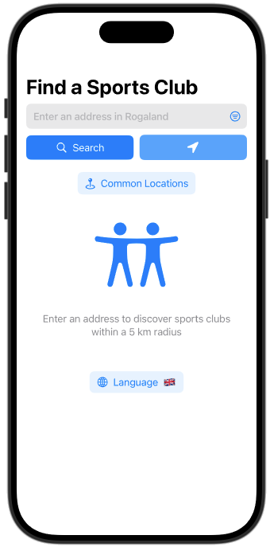
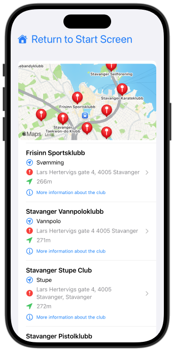

SportINaer
SportINaer helps you find sports clubs near your location. The app only works in Rogaland, Norway.


Professor, University of Stavanger
SportINaer helps you find sports clubs near your location. The app only works in Rogaland, Norway.

